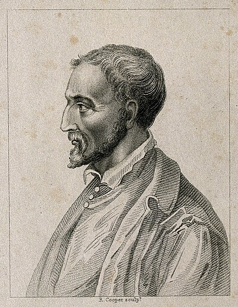

1501–1576
Italian
Algebra, probability, medicine
Cardano was a Renaissance polymath of the most dramatic kind: physician, mathematician, gambler, astrologer, and jailbird. Born illegitimate in Pavia, he became one of the most famous doctors in Europe while simultaneously advancing algebra further than anyone since the ancient Babylonians.
His great mathematical achievement was publishing the general solution to the cubic equation in Ars Magna (1545). The formula was actually discovered by Scipione del Ferro and independently by Niccolò Tartaglia, who shared it with Cardano under an oath of secrecy. Cardano broke the oath — arguing that del Ferro had priority — and published it alongside his student Ferrari's solution to the quartic. This triggered one of the bitterest feuds in mathematical history, with Tartaglia and Ferrari exchanging public insults and eventually holding a mathematical duel in Milan.
The cubic formula forced Cardano to confront square roots of negative numbers. When the formula produces $\sqrt{-15}$, what do you do? Cardano called these quantities "as subtle as they are useless," but he computed with them anyway — obtaining correct real answers from intermediate complex steps. This was the first serious engagement with what would become complex numbers.
His life was marked by tragedy. His eldest son was executed for poisoning his wife; Cardano himself was imprisoned by the Inquisition for casting the horoscope of Jesus Christ. He died in Rome in 1576, allegedly having predicted the date of his own death — and, some say, having fasted to ensure the prediction came true.
| Phase | Page | Referenced for |
|---|---|---|
| Phase 10 | Galois Theory and Abel-Ruffini | Published the cubic formula (1545) |
| Phase 10 | Galois Theory and Abel-Ruffini | Cubic and quartic formulas as context for unsolvability of the quintic |